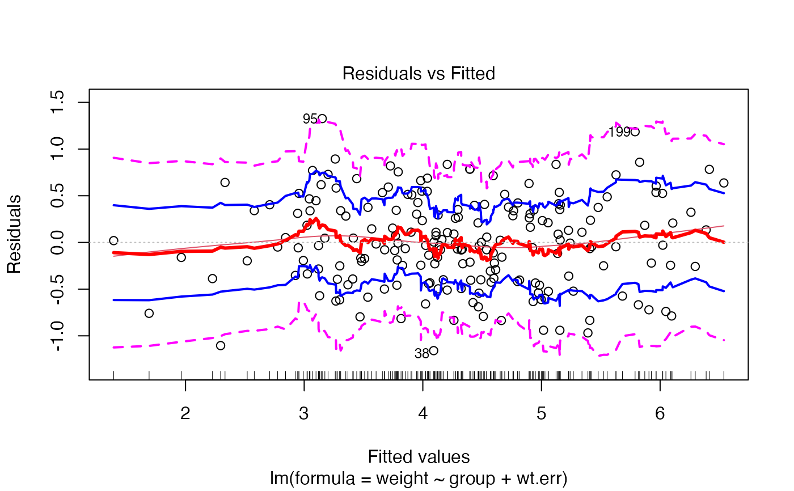

Plots to assess the goodness of fit for the linear model objects
lmplot2.RdPlots to assess the goodness of fit for the linear model objects
lmplot2( x, which = 1:5, caption = c("Residuals vs Fitted", "Normal Q-Q plot", "Scale-Location plot", "Cook's distance plot"), panel = panel.smooth, sub.caption = deparse(x$call), main = "", ask = interactive() && nb.fig < length(which) && .Device != "postscript", ..., id.n = 3, labels.id = names(residuals(x)), cex.id = 0.75, band=TRUE, rug=TRUE, width=1/10, max.n=5000 )
Arguments
| x | lm object |
|---|---|
| which | Numerical values between 1 and 5, indicating which plots to be shown. The codes are: Fitted vs residuals Normal Q-Q Scale-Location Cook's distance Residuals vs. predictor |
| caption | Caption for each type of plot |
| panel | function to draw on the existing plot |
| sub.caption | SubCaption for the plots |
| main | Main title of the plot |
| ask | whether interactive graphics |
| ... | parameters passed to |
| id.n | integer value, less than or equal to residuals of lm object |
| labels.id | Names of the residuals of the lm object |
| cex.id | Parameter to control the height of text stringsx |
| band | logical vector indicating whether bandplot should also be plotted |
| rug | logical vector indicating whether rug should be added to the existing plot |
| width | Fraction of the data to use for plot smooths |
| max.n | Maximum number of points to display in plots |
Note
This function replaces plot.lm2, which has been deprecated
to avoid potential problems with S3 method dispatching.
See also
Examples
ctl <- rnorm(100, 4) trt <- rnorm(100, 4.5) group <- gl(2,100,200, labels=c("Ctl","Trt")) weight <- c(ctl, trt) wt.err <- rnorm(length(weight), mean=weight, sd=1/2) x <- lm(weight ~ group + wt.err) lmplot2(x)lmplot2(x, which=1, width=1/3)lmplot2(x, which=1:3, width=1/3)